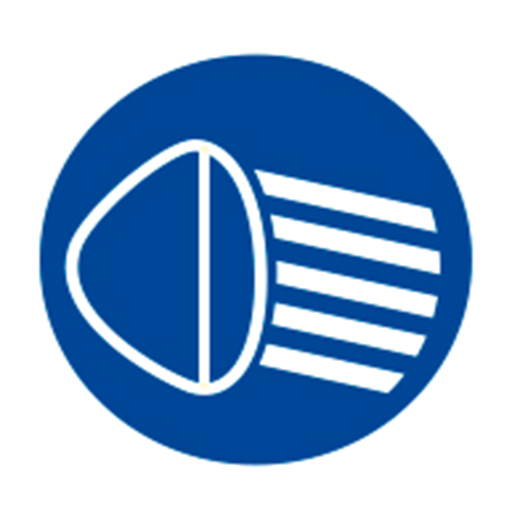

MotoLight es una herramienta auxiliar experimental. El encendido de las luces bajas reglamentarias conforme a la Ley Nacional de Tránsito N° 24.449 y leyes provinciales es una responsabilidad exclusiva e indelegable del conductor.
El usuario comprende y acepta expresamente que el uso de esta aplicación es puramente asistencial e informativo. En ninguna circunstancia reemplaza la atención visual, el juicio preventivo, el control mecánico ni las obligaciones legales del conductor del vehículo.
Los desarrolladores, mantenedores, colaboradores y distribuidores de MotoLight no se hacen responsables bajo ningún concepto por:
La aplicación incluye voces y audios humorísticos inspirados en modismos y tonadas autóctonas regionales (ej. tonada cordobesa).
Algunos de estos paquetes de audio contienen lenguaje coloquial, modismos enfáticos o expresiones de humor popular. El usuario reconoce expresamente esta característica antes de activar dichas modalidades de voz y acepta su uso bajo su propio criterio.
Para desempeñar su tarea sin que el conductor deba manipular el teléfono en marcha, MotoLight requiere permisos de:
100% Privacidad Local: Los datos de geolocalización no se almacenan en servidores externos, no se transfieren a terceros ni se comercializan. Se procesan efímeramente en la memoria RAM del dispositivo.
El uso continuado de la aplicación implica la total conformidad con estos términos. Si en algún momento no está de acuerdo con las condiciones expuestas, debe desinstalar la aplicación de su dispositivo.